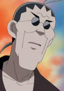

| |
Looker |
|
Looker is an officer of the officer for the International Police who investigate villianous crime. He has worked with Ash and Co. a couple of times. |
 |
Professor Cedric Juniper |
- Pokemon Black and White
- Pokemon Black and White: Adventure in Unova
|
Professor Cedric Juniper is Professor Juniper's father. He used to be a Pokemon researcher. He specializes in Pokemon distribution and biology. he is an eccentric man and also quite indecisive, at times, and mostly issues a warning what people shouldn't do in a late time. |
|  |
Zander |
- Dinosaur King
- Dinosaur King D - Kids
|
Zander is a memeber of the Alpha Gang. He works with Ursula and Ed to obtain dinosaur cards for Dr. Z. He is the one who comes up with the plans that goes horribly wrong. He acts smart and sophisticated but is nervous and a coward at times. |